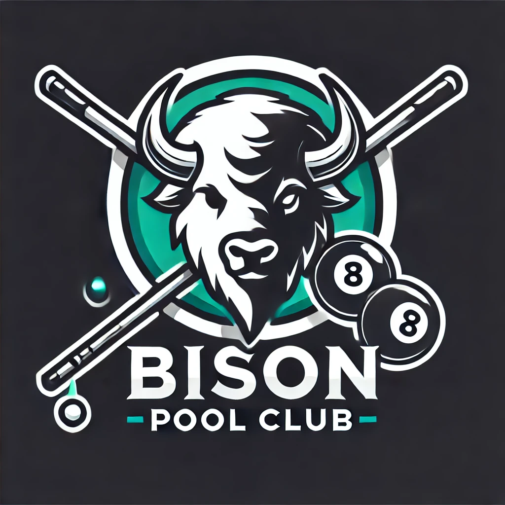

About Me
I am currently a sophomore majoring in Computer Science at Bucknell University. I have a passion in learning and applying new technologies into solving real-world problems, therefore bringing value positive impact to life around me.
I am having a great life at Bucknell, where apart from professional and academic aspect (which I will talk about in another section), I am involved in a plenty of extracurricular activites. I am the founder/current president of Bison Pool Club, a place for students with a passion for billiards/pool to hang out. We often have a great time playing pool during weekends after a hardworking week. In the future, I also plan to hold on-campus events such as sports-promoting session, championships, etc.
I am also the current Vice President of Finance for Bucknell Vietnamese Student Association, where I manage financial operations, ensuring strategic allocation of resources for events that enhance cultural representation and community cohesion.

There are several more things that I am doing, and will plan to do, on campus, so stay tuned and I will update with you guys in the future!